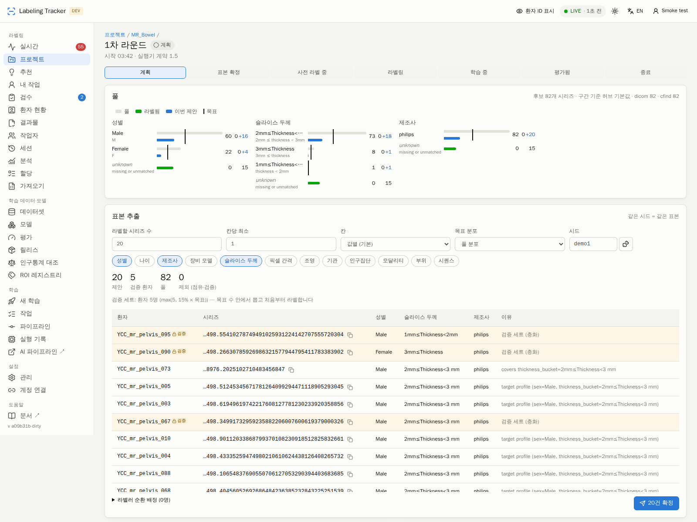

After this page a project lead can run the loop the labeling team works in — choose a batch that covers the data's distribution, have it labeled, train, pre-label the next batch with that model, let the team correct it — and read, round by round, whether the model is good enough.
A round is one pass of the team's loop for one project. Round 1 has no model: its cases are labeled from scratch, and it also fixes the project's validation set. From round 2 on, the previous round's model pre-labels the new cases and the team corrects the AI result instead of drawing everything.
planning ─► sampled ─► prelabeling ─► labeling ─► training ─► evaluated ─► closed ─► next round (planning)
│ │ │ │ │ │
pool + bulk prelabel_only OncoStudio label-set + DSC on the fixed valid set,
sampler assign job (round ≥ 2) (pulls the valid_pinned correction effort per ROI,
(facets) pre-label) (auto at 90%) coverage per facet value
| Term | Meaning |
|---|---|
| Pool | Cases that could enter the project: matching its patient-ID pattern and modality, not excluded, not already assigned, and (by default) not already labeled in a deployed split of the same model family. |
| Facets | sex, age bucket, vendor, scanner model, slice-thickness bucket, pixel spacing, contrast, institution, population, modality, body part, sequence. Buckets are ai-pipeline's regulatory categories; unknown is a value you can see and sample. |
| Validation set | Chosen once in round 1 (15 % of the round's target, at least 5 patients by default), labeled from scratch, never pre-labeled, and used as the validation split of every later training job — so DSC can be compared between rounds. |
| Round metrics | DSC / HD95 per ROI on the validation set, correction effort per ROI on this round's pre-labels, cases labeled, coverage per facet value. |
This section: hub (CONTRACT §41.6, D201).
S49b (2026-11-02): the project pages (pool, rounds, loop strip, New training's default option) read the executor's facts — info, templates, account links — before they take a database connection, and a failed answer is remembered for 30 s; the loop's own moves after an executor event run on the background poller's connection. A slow executor makes these facts late (the pages say the executor is unavailable), never the whole hub unavailable.
v1.60 §76.3 (S51): an iteration's Train and the default pipeline are sent under the
hub's own identity as before; once the executor lists hub_vouches the job names the person who pressed
Train as its requester at the executor too (not app:hub), so that person may cancel or stop it there and
the executor's audit shows them. Who may press Train is unchanged (§40).
v1.39 §53.1: an iteration that trains with the loop's pipeline sends the pipeline's
params without the ids the executor marks fixed (convert.mode: the iteration pins the project's
label revisions), as the wizard does. The wizard's rtss.as_of is given to the minute; the job's own
cohort as_of is the submission time.
v1.45 §56.4: the same holds for any parameter the executor adds: an iteration
sends the loop's pipeline's stored value of report.eval_prerender_n (the evaluation viewer's prerendered
samples; e.g. 10), and nothing when the pipeline keeps the executor's default 5. A value outside the executor's
min / max is refused when the pipeline is saved (Training).
v1.47 §63: the loop policy has model_type (3d default,
2d; PUT …/round-policy refuses anything else with model_type: 3d or 2d). Every iteration
sends it as the executor's train.mode and records it in the round (metrics.loop.model_type,
beside model_name); the strip's policy and model carry it. Without its own
model_name the loop deploys to <CODE>_<model_type> (RIBS_3d), at the next
patch above the old <CODE> family's versions. A 2d loop on an executor without train.mode
is refused (409) with the reason (tests/test_model_type_v147.py).
v1.48 §68 (S36, D300) — the type's defaults on Train: a 2d loop trains with the executor's 2d defaults (today batch size 16 instead of 2) for every parameter the loop's policy or pipeline does not set; a value set there stands. Details: Training › the hub applies the model type's defaults.
v1.48 §67 (S35, D299) — progress across jobs: how the project's models improve
as more items are labeled. GET /ui/api/projects/{id}/training-progress (the app:
GET /api/v1/projects/{code}/training-progress?user_id=) lists one point per job of the project, oldest
first — every job that succeeded with an evaluation, plus the running ones (no DSC yet): mean validation DSC and HD95,
DSC per class, training / validation sizes, the items labeled when the job was submitted, the deployed ones, best
epoch and stop reason, and whether the validation set differs from the previous point's (then the DSC values are not
directly comparable). The Progress card on the training view draws it (W21); field list:
hub › training progress.
On the web (W21): the Iterations panel's head links to Progress across jobs →, the Progress card under Training › Training for this project (Training › Progress across jobs).
v1.47 §63 amendment (S33, D295): OncoStudio's Train strip sets the type with
PUT /api/v1/projects/{code}/round-policy {user_id, model_type: "3d" | "2d"} (no token, like
every /api/v1 call): a lead or admin only (403 not available to your role for a labeler, 403 for an
unbound login), only model_type (any other key → 400), the same effect as the web's
PUT /ui/api/projects/{id}/round-policy — the rest of the policy is kept, nothing is started (D141). Both
routes refuse 2d with 409 the executor's hub_loop cannot train 2d yet (its template has no
train.mode) when the loop's template (its pipeline's) lacks train.mode. The app's reply:
{ok, model_type, model_name, version, next_version} — model_name the family the loop deploys to
(RIBS_2d), version the highest one deployed over it and the old <CODE> family
(null when none), next_version the one the next deploy takes (above the project's live jobs too).
GET /api/v1/projects/{code}/loop is unchanged and then shows policy.model_type.
On the web (W19): the project page's Train strip shows Model type 3D | 2D
beside Train — a lead switches it there (saved at once as the loop policy's model_type; the next Train
trains that type), others read Next Train: 2D model. Automation › Training loop has the same choice, and its
model-name placeholder follows it (RIBS_2d). The Iterations table names each iteration's type after
its model (RIBS_2d 1.0.5 · 2D); iterations from before 1.47 show none.
v1.39 §43.4: the loop's Train keeps its rule a job of this project is running; only the wizard may start a second job of the project, under another deploy version (Training). Since v1.44 the wizard raises a taken or lower version to the next free one instead of refusing it; the loop's own deploy is unchanged (Training).
Since v1.28 the usual way to train is the project page's Train button (the training loop): add items, label, Train, correct the pre-labels, Train again — no pool and no sampler. Every Train is one iteration, and an iteration is a round record like the ones below, with these differences:
| Iteration (Train) | Sampler round (this page's steps 1–6) | |
|---|---|---|
| Born | by Train, directly in training; target_n = the labeled items at the press; no sampler request | by a lead in planning, then sample → commit |
| Items | every item of the project (no batch) | the committed sample |
| Label states | the project's loop_label_states (v1.29 §42.4; default the four human states, never prelabel) — the training view's chips | the round policy's label_states (all five) |
| Validation set | frozen at the project's first Train: the lead-marked rows, else a stratified draw over the labeled items (labels in the chosen states) | drawn inside round 1's sample |
| Pre-labels | started by the hub when the job exports its model, for every unlabeled item outside the validation set; items added later by the 10-minute tick (the training job's own pre-label hand-off, prelabel.hub_push, is off — D210) | round ≥ 2, the round's batch, at commit or by the button |
| Evaluated | the job succeeded → evaluated with the same metrics (DSC / HD95 per ROI, correction effort of the previous iteration's pre-labels, labeled count, coverage); plus the automatic deploy when the DSC passes the project's threshold | the same |
| Closed | by the next Train (which opens the next iteration) | by 라운드 종료 |
| Deploy | the §41.5 threshold deploy after the job (POST …/deploy by app:hub) — or, v1.38 §55, when the loop's round_policy.pipeline has deploy.enabled, the job's own deploy stage (recorded as metrics.loop.deploy_in_job {family, version, memo}; metrics.loop.deploy follows the stage: deploying → deployed / failed / none); the loop's pipeline as metrics.loop.pipeline {id, key, name} | none (a lead deploys from the job page) |
| Model name | the project's model name (Automation… › Training loop), also in the Models pages and the app — never the executor's export name (§41.10) | the executor's registration |
| Listed as | origin: "loop" in GET /ui/api/projects/{id}/rounds | origin: "sampler" |
| Labels counted | the project's own only (v1.31 §44): the loop's counts, minimum, validation draw and pre-label eligibility, and a sampler round's labeled facets, validation check and pre-label batch ignore labels of the same series made for other projects | |
| Not a round | a Default pipeline job (v1.30 §43.3) trains on the rows as marked valid / train (optionally on a subset of the target ROIs) and creates no round — no iteration, no pre-labels, no deploy after it; since v1.41 the wizard may send its own Train / Valid lists instead of the marks (every listed row is sent: no patient cap; a row left out is named in the preview; since v1.43 each listed series goes with its DICOM PatientID, never the hub's own id — D271) | |
Items whose human label exists nowhere — no file saved to the hub and its RTSTRUCT series not in the hub's mirror
of the PACS — are not trained on and not drawn into the validation set (§41.9); Iterations… lists them with
label file not found on the hub or the PACS (unusable[] of GET …/rounds), and the
strip counts them apart (labels.unusable_n). Since v1.33 (§47) the list also holds the Excel-era rows
whose merged record has no single RTSTRUCT holding every target ROI, with target ROIs spread over <n>
structure sets or missing target ROIs: <list>; a row whose single source file is on the PACS trains as a
legacy label.
On the web ⋯ › Iterations… lists the iterations (model, labels, pre-labels, DSC, deploy) beside any sampler round, then the DSC per ROI by iteration; an iteration's page shows This iteration (model + job, DSC / HD95 / n per ROI, pre-label jobs, deploy) instead of the pool and sampler cards, without round buttons. The DSC per ROI is listed under the project's spelling of each target: the executor reports the registry's official names (v1.34 §48), and the hub maps them back through the alternative names, as on the loop strip.
The web's Rounds… panel is named Iterations…: the same history and trend table; the pool and sampler cards appear only for rounds the sampler created. The sampler path below stays for projects that want a batch chosen to cover the data's distribution; the loop never calls it. A Train while a sampler round is open closes that round.
This section: hub (CONTRACT §11.2, D83).
Open the project, tab 라운드 (Rounds), then a round. The top card shows the project's pool: every
image series whose patient ID matches the project's patient_regex and whose modality is the project's,
that is not an RT object, not already assigned in the project (excluded rows included) and — by default — not an
item of a deployed split of a model family the project has trained (those already have labels). A project without
patient_regex has no pool; set it under 편집.
For each sampled facet a small chart lists every value: a grey bar = series in the pool, a green bar = already
labeled in the project, a blue bar = proposed by the current preview, and a black tick = the preview's target. The
rule of each bucket is printed under its label (for example 49y ≤ age < 71y under 50~70;
vendor is an open set — each first word of the manufacturer is its own value). unknown (population:
Others) is a value like any other: it is shown, counted and sampled. The card header says where the
bucket edges came from (ai-pipeline, cached daily with its sha256, or hub fallback — the same table
copied, used until the first fetch) and how many series each source contributed.
| Where a facet comes from | Source (rank) |
|---|---|
| the DICOM header read by the hub's header sync | dicom (4) |
| the scoped C-FIND refresh (below) | cfind (3) |
| the executor's harvest of the converter index; the SCP / OncoFlow mirrors | pipeline_db, scp, oncolabdb (2) |
ai-pipeline's per-case metrics, and the deployed metrics JSONs read by the hub's sync_deploy | metrics (1.5) |
| manual entry, OncoStudio events, imports | 1 · Excel 0 |
A higher rank wins per field; meta_sources on each case records the winner (the pool API lists it).
Everything arrives through one strict write path, POST /svc/v1/cases/meta, which refuses any key naming a
patient's name or birth data.
Growing the pool (lead): POST /ui/api/projects/{id}/pool/refresh {since?, until?, max_studies} asks
the central PACS by C-FIND only (never C-MOVE or C-STORE, calling AE ONCOLAB_HUB) for the studies whose
PatientID starts with the regex's literal prefix (^PELVIS_2023_00[0-9]{2}$ or ^PELVIS_2023_00([0-3][0-9]|40)$ → PELVIS_2023_00*; only a
| outside any group, as in ^A|^B, leaves no prefix) and whose
ModalitiesInStudy is the project's — one study-level query without a StudyDate: the central PACS answers nothing
to a StudyDate range (found in the dev acceptance, 2026-09-30), so since/until only filter the
answers on the hub. The full regex filters them too; then, for at most max_studies (default 200) studies not
expanded before, in StudyInstanceUID order, a series-level query turns their image series into cases (source
cfind). The answer is {studies, series_new, series_seen, found, next}; next = studies still to
expand (call again), null when done. The expanded study UIDs are remembered, so a later refresh only
expands studies that are new. A regex without a literal prefix is crawled one StudyDate day at a time (at most 60 days
per call) and needs both dates. The header sync then reads the new series first when the project's open round is
still in planning (at most HEADERS_MAX_PER_RUN series per run, default 200).
This section: hub (CONTRACT §11.3, D82).

In a round in planning the lead fills the form; every change re-runs the preview (nothing is written):
| Field | Meaning |
|---|---|
Series to label (target_n) | the size of the batch, validation set included |
| Facets | default sex × slice thickness × vendor |
| Cells | per value (default): each facet value is a cell; per combination: every value combination is a cell (explodes quickly) |
| Min per cell | every populated cell first gets this many labeled-or-proposed series (default 1) |
| Target profile | after coverage, the rest follows the pool's own distribution, uniform, or a pasted {facet: {value: share}} (API) |
| Seed | ties break by sha256(seed:series): the same seed gives the same sample; the dice make a new one |
How it picks: the rarest cell that still lacks its quota first, choosing among its candidates the one that fills the most other missing cells; then, until the target, the series that closes the largest gap to the target profile; at most one series per patient. Each row says why it was picked ("covers vendor=philips"). When the quotas need more series than the target, the rarest cells win and the rest are listed as short — raise the target or accept it. Held back (leak guard): patients someone has open in OncoStudio (open claims), patients of the validation set (after round 1), and series already in the project or in a deployed split of its family.
Commit re-runs exactly that preview (same seed) and creates the assignments (source round, with the
round's id). Pick labelers to spread the batch round-robin; with none, the rows stay unassigned and appear in each
labeler's 추천 (suggestions point at the open round's unassigned rows). Until someone starts working, 다시 표본
추출 (resample) takes the round back to planning and removes its untouched assignments.
This section: hub (CONTRACT §11.4, D80).
Round 1's preview also draws the validation set: max(valid_min_patients, ⌈valid_fraction × target⌉)
patients (round policy, defaults 5 and 15 %), stratified over the same facets by a second pass of the sampler, taken
out of the target (a target of 20 labels 20 series, 5 of them for validation). They carry a lock mark in the
preview and on the board (R1 · 검증). At commit the set is frozen on the project (series, patients, date,
round) and shown on the round page and the Rounds tab.
422 series is in the
validation set) and a round's pre-label job leaves them out — a reference drawn by correcting the model would
flatter the model.valid_pinned (executor contract ≥ 1.5), so
each round's DSC is measured on the same cases. Their patients never enter a later sample.This section: hub (CONTRACT §11.5, §7.3 v1.5, D81, D84, D86).
From round 2 on, committing the sample starts the pre-label job by itself when the round policy's auto
pre-label is on (default) and the previous round's model is known (the job of the closed round); the round goes
to prelabeling. The 사전 라벨 button does the same by hand (in sampled or labeling), with
another model if needed: an executor or hub job id, a model path, or a registered weights md5 (the hub resolves it to
a path). The hub sends template prelabel_only with a series cohort — the round's non-validation
series that have no human label, each with its patient and study — and the parameters model_job_id /
model_path / model_md5, round_id and round_n. An executor below contract
1.5 cannot run it: the button answers 409 and says so.
Each RTSTRUCT the executor hands back is recorded with its round, model version and job; the answer says how it
reaches the labeler: push when the project has a pre-label destination (C-STORE as before), otherwise
pull — OncoStudio fetches it with GET /api/v1/prelabels/{sop}?user_id= when the case is opened. The
hub serves a copy without the patient's name, birth date/time, other names/IDs, address, phone and mother's birth
name (the stored file is untouched), only to a bound OncoStudio login, and logs every pull (status pulled, who,
when, how often — project page › 자동화 › AI 사전 라벨). When the job ends — whatever each series' outcome — the
round moves to labeling; the round page lists per series whether a pre-label arrived and how it was delivered.
_pre ROIs, links the pre-label
(prelabel_revision_uid) and the round (round_id), and the hub measures the correction
effort for the round metrics.This section: hub (CONTRACT §11.7, D85, D80).
While the round is labeling, the hub checks every 10 minutes (round_tick): when the round's
delivered-or-later share reaches the policy's ratio (default 90 %) and every validation series is labeled, it
starts training itself (requested_by app:hub): the project's label set in the policy's label states (default
all five), the policy's template and parameters — every required ROI-list parameter of that template the policy leaves empty
gets the project's ROI set, under the template's own name (start.rois for the executor's
hub_loop / hub_checkpoint; other required parameters, e.g. export.model_path of
hub_checkpoint, must be in the policy), and start.modality the project's modality (CT / MR) when the
policy names none (the executor otherwise defaults to CT; an iteration's Train always sends the project's) — and the
pinned validation set. The progress card says what it waits for ("waiting for 0.9 delivered (12/16)", "waiting for the valid set (2
series unlabeled)"); its counts, per round and per labeler, and the round's item list read in display stages
(Assigned / Labeled / Review / Approved — v1.18, D149, Stages); facet values read in
the UI language (남 / 여, 조영 / 비조영, 미상 — D153 W7). 학습 시작 starts it by hand at any time from labeling (it refuses while validation series are
unlabeled, because the executor would refuse the pin); policy train manually only turns the automatic start
off. A failed job leaves the round in training with the error; press the button again. If it failed after
its evaluate stage, the page still shows that job's per-ROI DSC (for reference; the round is not evaluated).
A round's training job asks for no pre-label push (D89): the round's pre-labels come from
prelabel_only, and a training template's own predict stage predicts the validation split, whose pre-labels
the hub refuses. When the template exposes a …hub_push switch the hub sets it off for round jobs,
whatever the policy says; the executor's hub_loop / hub_checkpoint keep it fixed today, so
the round page says so and the executor skips the refused validation-set files instead of failing the job. Jobs
started from 새 학습 or a policy keep the template's behaviour.
When the job succeeds the round becomes evaluated with its metrics: DSC / HD95 per ROI on the validation set (from the executor), the correction effort per ROI of this round's pre-labels (how many were delivered unchanged, the median changed fraction), the number of labeled series and the coverage per facet value. The trend table compares rounds. With an executor below 1.5 the job trains with its own split and the page says valid set not pinned — executor v1.4. "Good enough" is the lead's call: 라운드 종료 closes the round and opens the next in planning, with this round's model as its pre-label model.
| Round policy (project › 자동화) | Default |
|---|---|
| auto pre-label (round ≥ 2) | on |
| train when | 90 % delivered + validation labeled; or manual |
| label states · template · parameters | all five · hub_loop · project ROI set (the loop's own states: loop_label_states, Training loop) |
| valid fraction · valid min patients | 15 % · 5 |
This section: executor (CONTRACT §11.6, D80, D83, D84).
prelabel_onlyWhen a round is committed with a model, the hub asks the executor for a prelabel_only job: a series
cohort (the round's non-validation series, labelled or not, 1–500, each with its patient ID) and the model, named by
model_job_id (a finished executor job whose export is used — same project, or asked for by the same person)
or model_path (a 3d_final_model.pt, or a deployed folder /mnt/deploy/models/<M>/<V>
the bound NAS account can read). model_md5, when sent, is checked against the file before the GPU is asked
for; round_id (the hub's round id) goes to the hub record and round_n (the round's number)
into the RTSTRUCT text — ids are for joins, numbers are for people. The classes come from the model's own
global_fingerprint.json.
| Stage | What it does |
|---|---|
| Download DICOM | by patient — the research downloader cannot fetch single series |
| Choose RTSTRUCT | prunes to the requested series: every other series of those patients (and of any other patient in the account's store) is hidden, not deleted; the log shows bytes downloaded against bytes kept |
| DICOM → NIfTI · targets | converts with empty masks allowed (unlabelled series are the point) |
| Check the model | md5 checked when sent; the model's family and version recorded for the marking |
| Predict → RTSTRUCT → label → hand to the hub | one RTSTRUCT per series, marked AI_PRELABEL, sent to POST /svc/v1/prelabel |
No training, export or deploy: a round's pre-label job takes minutes for a handful of series (the download is the long part). It does not block a training job of the same project (the in-flight guard is per project and template).
Every training job of a project with a frozen validation set carries cohort.valid_pinned. The split then
puts exactly those series in valid and every other labelled series in train, whatever the
split mode says. A pinned series that has no label in the cohort refuses the job at creation (422
valid_pinned_missing, listing them) — never dropped silently, since the round's DSC would stop comparing. Another,
unpinned series of a validation patient goes to neither side and the split log names it (a patient is never on both
sides). The job page shows valid_pinned_n.
The RTSTRUCT's StructureSetDescription reads round <n> · <family> <version | job:<id>> ·
<md5[:8]>, where <n> is round_n (no round part when the job has no
round_n); its SeriesDescription keeps the older
AI_PRELABEL <family> <md5[:8]>, which is how later selections keep ignoring pre-labels. The hand-off also
sends round_id, model_version and job_id — only to a hub that reports contract 1.5
(GET /api/v1/health); a hub that refuses them gets the older body, and the stage log says so. The hub's answer
(delivery: push | pull) is written in the stage log.
The converter builds an index of every DICOM file it reads (<store>/.db). Right after conversion — in
training and pre-label jobs alike — the executor reads only these columns from it: series and study UID, patient
ID, modality, body part, sex, age, manufacturer, model, slice thickness, pixel spacing, spacing between slices, kVp,
kernel, institution, protocol (as the sequence, MR only), field strength, contrast agent — one row per series — and sends
them to POST /svc/v1/cases/meta as source pipeline_db. Names, birth dates, physicians and paths
in the same file are never read into the payload. It needs the pinned pipeline's db_sidecar capability and a
hub on contract 1.5; otherwise, or when the hub answers 404 or 422, it is skipped and the conversion log says why — it
never fails a stage.
Series that are already in a deployed training or validation split were evaluated by ai-pipeline, which read one DICOM header per case at that time. Those values reach the hub's pool as facets, so the sampler can see where the existing data already sits (and exclude the family's split items, which already have labels).
| Facet | From the per-case metrics |
|---|---|
| sex, age, vendor, slice thickness | the DICOM header (as the regulatory profile uses them) |
| scanner model, modality, spacing between slices, pixel spacing, institution | the same header, written since v1.5; older results were completed by a one-off header backfill |
| contrast | ai-pipeline's contrast classifier (sampled cases only) |
| population | the country rules on the patient ID prefix |
Only exact series. A case is sent (POST /svc/v1/cases/meta, §3, source metrics, rank 1.5
in §11.2) only when its series UID is exact and its header was read from that very series: the case's own DICOM,
or the central PACS matched by series UID. When the central PACS could only be matched by patient, the header came
from some series of that patient, so those facets are not attached to any series. A header from the scanner
(dicom, cfind) or the executor's harvest (pipeline_db) outranks these values. No names,
birth dates or study dates are sent; the patient ID is. Values that ai-pipeline's case metadata registry filled
(cases without a readable header) are never sent as series facets: they are not a header fact of that series. The
hub reads that registry directly for its project rows (D138a, /mnt/deploy/config/case_meta).
Categories come from ai-pipeline. The buckets a round uses (age <49 / 50~70 / >70, slice thickness
1–2 / 2–3 / ≥3 mm, sex, contrast, country, vendor as the first word of the manufacturer) are the regulatory
profile's own categories, published as data at ai-pipeline's GET /api/v1/profile-categories (§8.2, D82) with a
sha256. The hub reads its edges from there, so a round's coverage and the 인허가 프로파일 count the same
way; unknown is a cell of its own. The label "50~70" counts ages 49–70 (whole years), as the regulatory
profile always has.
| Record | Key | Written by |
|---|---|---|
labeling_round (state, seed, quotas, source model, jobs, metrics) | (project_id, n) | hub |
assignment.round_id, assignment.is_valid | assignment id | hub (commit) |
Since v1.9 (U6) is_valid is tri-state: true valid, false train, null not stated. The sampler and the training cohorts treat null like train-eligible (coalesce(is_valid, false)); only a lead, a round or the data list sets it. | ||
labeling_project.valid_set, round_policy | project | hub (round 1 commit, lead) |
label_revision.round_id, model_version, job_id | rtss_sop_uid | hub (pre-label intake, deliverables) |
imaging_case.case_meta + meta_sources | image_series_uid | hub (header sync, C-FIND, deploy sync) · executor and ai-pipeline via cases/meta |
patient_regex, or no case matches it and
the modality yet → set the regex, then 풀 새로고침 (scoped C-FIND) and wait for the header sync.